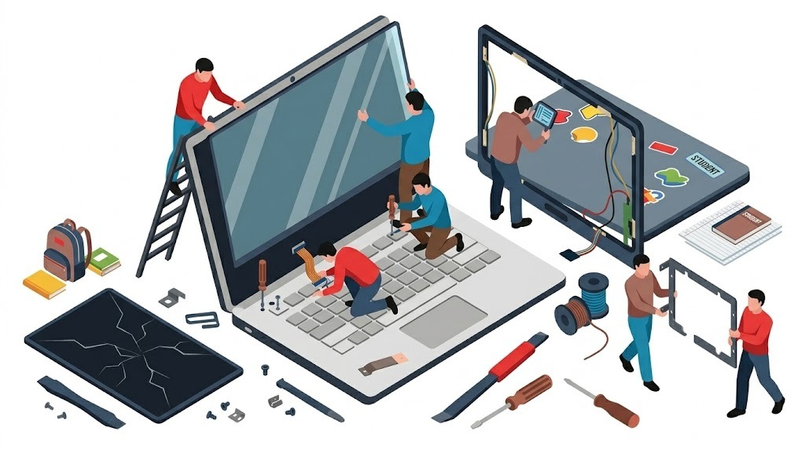
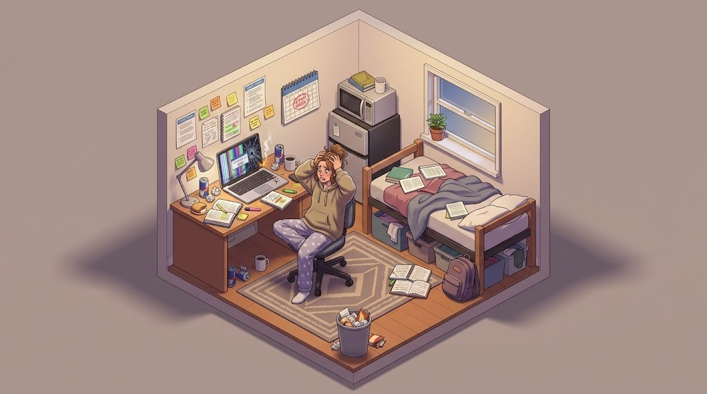
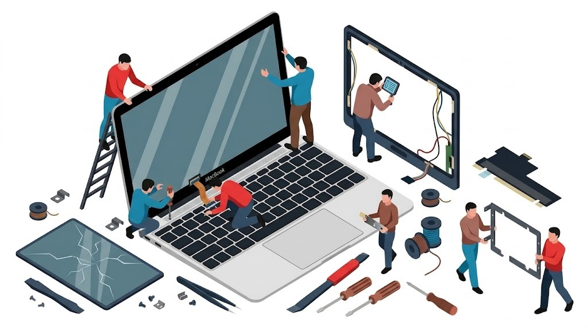

Cracked glass, black screens, purple vertical lines, or distorted LCD bleeding? We replace damaged laptop displays across Greater Brisbane with genuine OEM and Grade-A+ panels. From Apple Silicon Liquid Retina XDR assemblies to Lenovo, Dell XPS, HP, ASUS ROG & Acer 144Hz–240Hz gaming displays, experience transparent flat-fee pricing ($150–$170 labor) and zero markup on parts.

Replacing a modern laptop screen is far more sophisticated than simply unscrewing a plastic bezel. Contemporary ultra-thin laptops feature eDP (embedded DisplayPort) micro-coaxial ribbon cables, 30-pin (Full HD 60Hz) vs 40-pin (QHD, 4K, or 144Hz–240Hz gaming) pinout architectures, and perimeter tension-release adhesive strips. A single misstep—such as connecting an LCD panel without completely isolating the lithium battery—can instantly blow the motherboard's microscopic 0402 SMD backlight fuse, turning a simple screen swap into an expensive micro-soldering ordeal.
We understand the sheer panic of cracking your laptop screen at 11 PM in your dorm room with a major university assignment due the next morning. Our mobile technician provides emergency priority dispatch across UQ St Lucia, QUT Kelvin Grove, QUT Gardens Point, and Griffith South Bank/Nathan.

If your display is cracked or showing inky purple bleeding lines, your coursework, photos, and assignments are almost certainly 100% safe on your internal SSD. When you call us for an emergency repair in St Lucia, Toowong, or Kelvin Grove:
We immediately hook your laptop to an external desktop display or HDMI bridge on-site, allowing you to submit your assignment on time without delay.
If your laptop uses a standard 14.0" or 15.6" 30-pin IPS panel, we complete the physical screen replacement right at your desk within 45 minutes.
Transparent flat labor fee ($150–$170) with zero hidden travel charges or diagnostic traps. Verified wholesale part pricing with client pre-approval.
Why does Apple quote $900 to $1,400+ to fix a cracked MacBook screen? Independent repair provides the identical factory-spec Grade-A+ display assembly at a fraction of the cost, installed with surgical cleanliness and full sleep-wake sensor recalibration.

On all MacBooks manufactured after 2016 (M1, M2, M3, M4 Air and Pro models), attempting to peel and delaminate only the thin front glass creates uneven backlighting, micro-scratches on delicate polarizing films, and permanent light leakage in corners. We install complete, factory-calibrated OEM Display Top Assemblies complete with matching anodised aluminum housings (Space Grey, Silver, Midnight, Starlight), integrated iSight cameras, and True Tone ambient light sensors.
Modern M2, M3, and M4 MacBooks incorporate an ultra-precise magnetic lid-angle sensor. We calibrate the sensor angle so macOS Sonoma and Sequoia sleep and wake flawlessly when you shut the lid.
On 14-inch and 16-inch MacBook Pro models (A2442, A2485, A2779, A2780, A2918, A2992), we service advanced Mini-LED panels, ensuring ProMotion 120Hz smooth scrolling and 1,600 nits peak HDR brightness.
We service and supply replacement screens for virtually every major laptop manufacturer in the Australian market. Below is our verified model compatibility index:
Unlike Apple MacBooks, ThinkPads, and Dell XPS laptops which are designed with accessible internal Torx screws and service brackets, Microsoft Surface Pro tablets and Surface Laptops are assembled with industrial perimeter structural epoxy. Opening a Surface unit requires heating the chassis to temperatures that weaken internal lithium batteries, inevitably bending the paper-thin magnesium housing and tearing fragile antenna ribbons. To maintain our spotless reputation for flawless, factory-grade repairs with genuine warranties, we do not perform glued Surface screen repairs and honestly advise customers to pursue manufacturer whole-unit exchange.
Not all screen problems look the same. Review our technical guide below to understand what happened to your display panel:
Cause: Physical impact, dropped laptop, or closing the lid on a pen, charging cord, or USB drive. The inner liquid crystal matrix has ruptured, leaving black circular pools and jagged fractures. Requires full panel replacement.
Cause: COF (Chip-on-Film) bonding degradation. The microscopic flexible circuits bonding the glass to the lower controller board have micro-fractured due to chassis torsion in a backpack. Requires new panel.
Cause: If shining a flashlight on the screen reveals a faint desktop image, your LCD is functioning, but the backlight circuit is open. Usually caused by a severed hinge cable or a blown 0402 SMD motherboard fuse.
Cause: Pinched or fatigued eDP display ribbon cable passing through the internal steel hinge barrel. Replacing or reseating the display cable stops the intermittent blackouts and signal drops.
Cause: Excessive point-pressure on the outer lid (e.g. heavy books placed on top of laptop). The internal diffusion reflector sheets have been compressed, creating permanently bright white spots on light backgrounds.
Cause: Seized factory steel friction hinges pulling brass knurled nuts out of plastic palmrests. We rebuild the broken anchor housings with industrial epoxy to protect the new screen from cracking.
We believe in complete pricing transparency. You never pay arbitrary markup on parts or surprise call-out fees:
| Service Category | Labor Fee | Typical Part Cost | Turnaround Time | Warranty |
|---|---|---|---|---|
| Standard Laptop Screen (14" / 15.6" Full HD IPS) HP, Dell Inspiron, Lenovo IdeaPad, Acer Aspire |
$150 flat | $80 – $130 wholesale | Same-Day / 24 Hours | 12 Months |
| High-Refresh Gaming Screen (144Hz / 165Hz / 240Hz) ASUS ROG, Lenovo Legion, Acer Predator, Dell Alienware |
$150 – $170 | $130 – $220 wholesale | Same-Day / 24 Hours | 12 Months |
| MacBook Air Retina Display Assembly M1 (A2337), M2 (A2681), M3 (A3113), 15" (A2941) |
$150 – $170 | $280 – $390 wholesale | 24 – 48 Hours | 12 Months |
| MacBook Pro Liquid Retina XDR Assembly 14" & 16" Mini-LED (A2442, A2485, A2779, A2780, A2992) |
$170 flat | $420 – $550 wholesale | 24 – 48 Hours | 12 Months |
| Broken Hinge Re-anchoring & Epoxy Rebuild Structural repair of snapped brass casing anchor mounts |
$150 – $170 | $0 (Included materials) | Same-Day / Overnight | 12 Months |
| Insurance Damage Assessment Report Official itemized report for Suncorp, RACQ, Allianz, NRMA |
$120 | N/A | Same-Day Written | Insurer Approved |
| Liquid Spill Teardown & Microscope Diagnostic MacBook logic boards & liquid damaged laptops requiring ultrasonic wash and corrosion trace |
$50 – $150 (100% Credited to Repair) |
Quoted upfront (0% markup) | 24 – 48 Hours Bench | Board Inspection |
ℹ️ Diagnostic Fee Policy: While standard on-site display inspections have zero diagnostic fees, liquid damaged laptops and custom desktop PCs require extensive bench teardown and carry a dedicated diagnostic fee of $50 to $150 depending on computer and model (which is 100% credited towards your repair invoice if you proceed).
We come directly to your home, office, or university campus across all Brisbane metropolitan sectors with zero call-out fee:
Plain-English answers to the most common questions our Brisbane technicians receive: